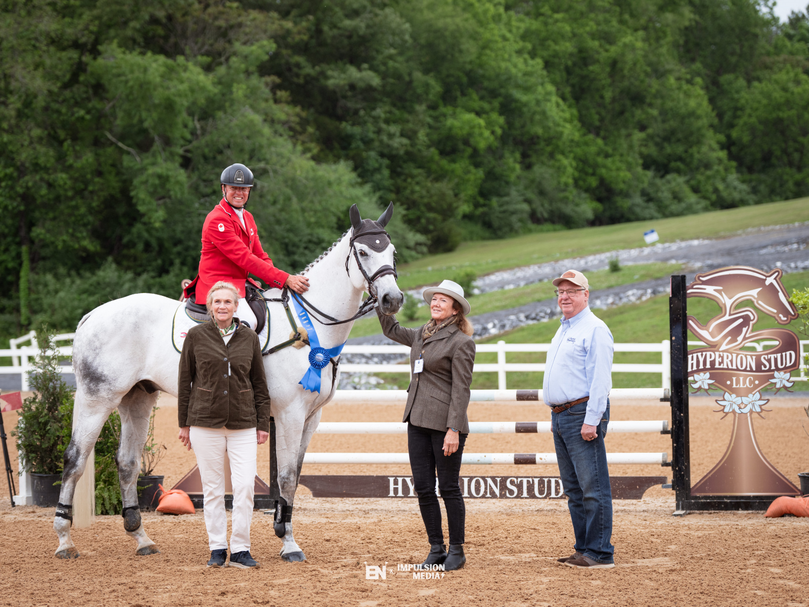

Karl Slezak lidera el CCI2*-L de Virginia tras la primera jornada de dressage
El jinete canadiense, medallista olímpico en París 2024, encabeza la clasificación provisional con Herald De La Rose tras lograr 28,4 puntos en la fase inicial del concurso completo.

Foto: assets.eventingnation.com
El Virginia Horse Center acogió este viernes el arranque de su concurso de completo, que incluye pruebas de formato largo en CCI1*-L y CCI2*-L. La jornada inaugural de dressage se desarrolló bajo la lluvia, aunque las condiciones no impidieron que todas las divisiones FEI y de nivel superior completaran su programa sin contratiempos. El evento cuenta con una participación destacada de jinetes procedentes de diez naciones, entre ellas Colombia, Brasil, Panamá e India, junto a un número superior al habitual de binomios debutantes en competiciones FEI.
En el CCI2*-L, Karl Slezak tomó el mando con Herald De La Rose, propiedad de Elizabeth Leete, sumando 28,4 puntos. El binomio aventaja por una décima al colombiano Romulo Roux, segundo con Cornelius Bo (29,2). Herald De La Rose, caballo Anglo-Europeo de ocho años hijo de Herald III, afronta su primer CCI2*-L tras haber sido adquirido inicialmente por los también canadienses Kyle y Jen Carter para su actual propietaria. Slezak, residente en Florida, valoró positivamente las temperaturas frescas del día, que favorecieron el rendimiento de sus caballos, y destacó la importancia de competir fuera de su estado habitual para exponerlos a terrenos con desnivel y entornos variados.
— Redacción de Hípica al Día